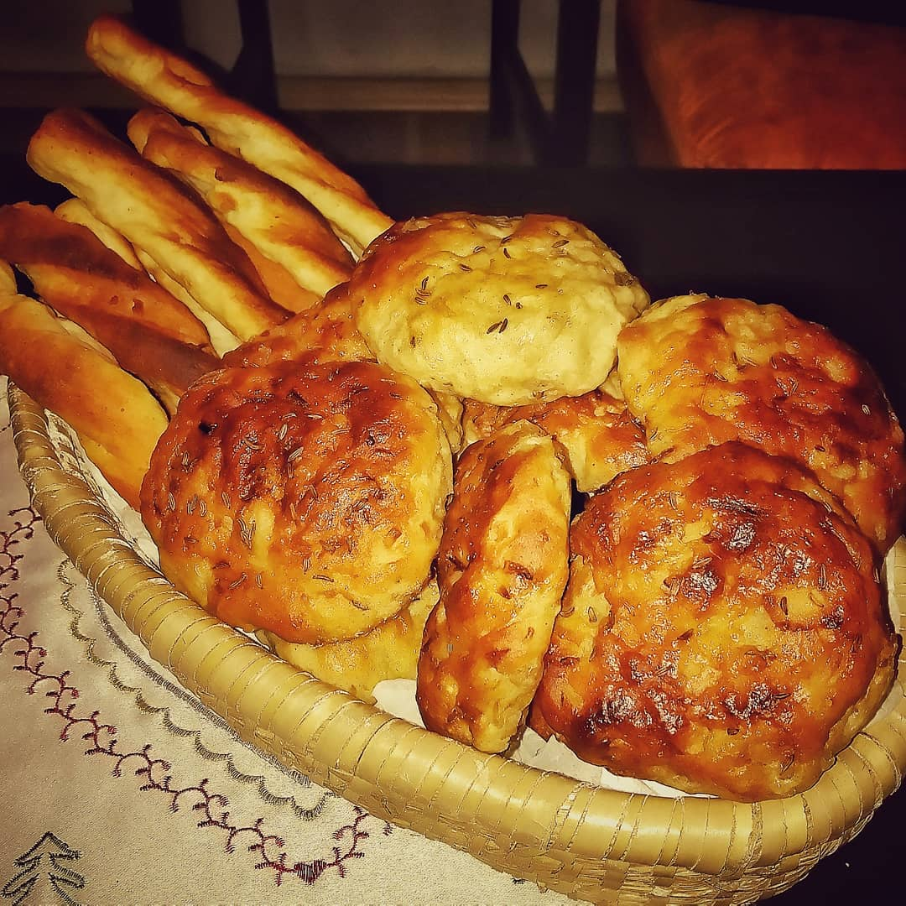

Bryndzové tyčinky — Normy Jedál
Tak jo. S příchodem novýho roku jsem se rozhodla obnovit naše vařící-pečící-fermentační Insta okénko.
Tohle jsou zelný chlebový placky, který jsme pekli s Kubou před Silvestrem. A bryndzový tyčky s chilli, který jsem dělala sama. Takže jsem je spálila. Ale to neva. I tak jsou celkem dobrý.
Silvestr je za náma a je toho stále spousta. Udělala jsem mimo to ještě tak milion kilo bramborovýho salátu. Mám totiž vždycky strach, že ho bude málo. A já ho mám strašně ráda. Takže teď nevíme, co jíst dřív.
Rozhodně nezhubneme. 🐹
Šťastnej novej rok! 🌌🎆🎇🎈 #cookordie #bakeordie #bakeorbreak #rucevmouce #pribehyznasikuchyne #dnespecu #dnesjim #bakeblog #foodblog #dnesjem #dnespecem #bakingcouple #zelneplacky #bryndzovetycinky #jidloalaska #domacikysanezeli #vanocniobzerstvi #nehubneme #dnesvarim #jidlojelaska #silvestrovskeobcerstveni #partyfood #foodparty #happynewyear #pf2019 #prague #cookordie666